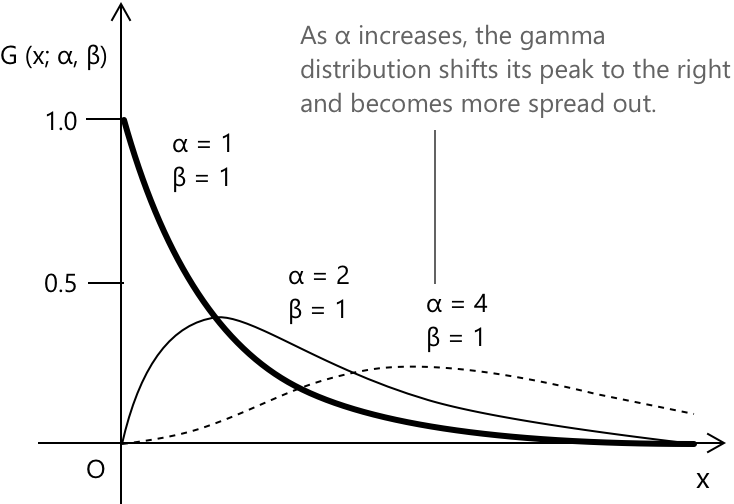

Гамма-розподіл
Вступ до гамма-розподілу
Гамма-розподіл — це неперервний розподіл ймовірностей, визначений на позитивній півпрямій. Він використовується для моделювання часу очікування, тривалості подій та явищ, де незалежні внески накопичуються з часом. Він походить від гамма-функції, визначеної як
\[ \Gamma(\alpha) = \int_{0}^{\infty} x^{\,\alpha - 1} e^{-x}\, dx \]
яка поширює поняття факторіала на дійсну область визначення через тотожність \( \Gamma(n) = (n - 1)! \) для кожного позитивного цілого числа \( n \). Загалом, кажуть, що неперервна випадкова величина \( X \) має гамма-розподіл з параметрами \( \alpha \) та \( \beta \), якщо її функція щільності ймовірності задана як
\[ G(x;\alpha,\beta)= \begin{cases} \dfrac{1}{\beta^{\alpha}\,\Gamma(\alpha)}\, x^{\alpha – 1}\, e^{-x/\beta} & x>0\\[10pt] 0 & x\leq 0 \end{cases} \]
- \( \alpha \) — це параметр форми: він контролює, наскільки швидко щільність зростає поблизу початку координат, і визначає ступінь асиметрії. Більші значення роблять розподіл більш симетричним і зміщують пік праворуч.
- \( \beta \) — це параметр масштабу: він розтягує розподіл по горизонталі. Збільшення \( \beta \) призводить до довших середніх часів очікування та ширшого розсіювання.
Носієм розподілу є позитивна півпряма, що відображає той факт, що він моделює тривалість, час очікування або інші величини, які не можуть набувати від'ємних значень. Взаємодія між \( \alpha \) та \( \beta \) формує загальну поведінку: \( \alpha \) керує внутрішньою структурою, тоді як \( \beta \) встановлює масштаб.

Коли \(\alpha\) зростає понад \(1\), гамма-щільність більше не має піка в нулі, а формує максимум при позитивному значенні \( x \). У міру збільшення \(\alpha\) цей пік зміщується праворуч, а загальна форма стає більш гладкою і менш асиметричною.
Як і для будь-якого неперерывного розподілу, загальна площа під кривою щільності має дорівнювати 1. Це той самий принцип, що діє для нормального розподілу, щільність якого інтегрується до \(1\) по всій дійсній прямій. Гамма-розподіл відповідає тій самій вимозі: його щільність визначена так, щоб інтеграл по позитивній півпрямій був точно рівний \(1\). Формально маємо
\[ \int_{0}^{+\infty} \frac{1}{\beta^{\alpha}\,\Gamma(\alpha)}\, x^{\alpha - 1}\, e^{-x/\beta}\, dx = 1 \]
Розв'язуючи інтеграл шляхом застосування заміни \( x = \beta t \), що дає \( dx = \beta\, dt \), ми можемо переписати вираз як:
\[ \int_{0}^{+\infty} \frac{1}{\beta^{\alpha}\,\Gamma(\alpha)}\, (\beta t)^{\alpha – 1} e^{-t}\, \beta\, dt \]
Після збору степенів \( \beta \), це набуває вигляду:
\[ \frac{1}{\Gamma(\alpha)} \int_{0}^{+\infty} t^{\alpha – 1} e^{-t}\, dt \]
Інтеграл у правій частині є саме означенням гамма-функції, тому отримаємо
\[ \frac{1}{\Gamma(\alpha)} \cdot \Gamma(\alpha) = 1 \]
Ключові особливості
-
\[\text{1. } \quad f(x) = \frac{1}{\Gamma(\alpha)\,\beta^{\alpha}} \, x^{\alpha - 1} e^{-x/\beta} \quad x > 0 \]
-
\[\text{2. } \quad \mu = E(X) = \alpha\,\beta \]
-
\[\text{3. } \quad \sigma^{2} = \mathrm{Var}(X) = \alpha\,\beta ^{2} \]
-
\[\text{4. } \quad \sigma = \beta\,\sqrt{\alpha} \]
Кожен вираз підкреслює ключову властивість гамма-розподілу, щільність якого визначена через гамма-функцію \(\Gamma(\alpha)\). Його середнє значення та мінливість спільно залежать від параметра форми \(\alpha\) та параметра масштабу \(\beta\), що визначає, як розподіл моделює час очікування та процеси з позитивною асиметрією.
Математичне сподівання гамма-розподілу
Як було зазначено в розділі про неперервні випадкові величини, математичне сподівання неперервної випадкової величини описує центральну тенденцію її розподілу і визначається як
\[ \mu = E(X) = \int_{-\infty}^{+\infty} x\, f(x)\, dx \]
Ця загальна формула застосовується до будь-якого неперервного розподілу, де \( f(x) \) позначає функцію щільності ймовірності випадкової величини \( X \). Для гамма-розподілу з параметром форми \( \alpha \) та параметром масштабу \( \beta \) щільність має вигляд:
\[ f(x;\alpha,\beta)=\frac{1}{\beta^{\alpha}\Gamma(\alpha)}\, x^{\alpha – 1} e^{-x/\beta} \quad x>0 \]
отже, математичне сподівання обчислюється як:
\[ \mu = E(X) = \int_{0}^{+\infty} x\, \frac{1}{\beta^{\alpha}\Gamma(\alpha)}\, x^{\alpha - 1} e^{-x/\beta}\, dx \]
Об'єднавши степені \( x \), отримаємо:
\[ E(X) = \frac{1}{\beta^{\alpha}\Gamma(\alpha)} \int_{0}^{+\infty} x^{\alpha} e^{-x/\beta}\, dx \]
Щоб спростити інтеграл, застосуємо заміну змінної \( x = \beta t \), що дає \( dx = \beta\, dt \). Після підстановки маємо:
\[ E(X) = \frac{1}{\beta^{\alpha}\Gamma(\alpha)} \int_{0}^{+\infty} (\beta t)^{\alpha} e^{-t}\, \beta\, dt \]
Збираючи степені \( \beta \):
\[ \begin{align} E(X) &= \frac{1}{\beta^{\alpha}\Gamma(\alpha)} \int_{0}^{+\infty} (\beta t)^{\alpha} e^{-t}, \beta, dt \\[0.6em] &= \frac{\beta^{\alpha}\,\beta}{\beta^{\alpha}\Gamma(\alpha)} \int_{0}^{+\infty} t^{\alpha} e^{-t}\, dt \\[0.6em] &= \frac{\beta}{\Gamma(\alpha)} \int_{0}^{+\infty} t^{\alpha} e^{-t}\, dt \end{align} \]
Залишок інтеграла розпізнається як гамма-функція, обчислена в точці \( \alpha + 1 \):
\[ \int_{0}^{+\infty} t^{\alpha} e^{-t}\, dt = \Gamma(\alpha + 1) \]
Використовуючи тотожність \( \Gamma(\alpha + 1) = \alpha \Gamma(\alpha) \), знайдемо
\[ \mu = \alpha \beta \]
Це показує, що середнє значення гамма-розподілу залежить від обох параметрів: \( \alpha \) визначає, як маса розподілена вздовж позитивної осі, тоді як \( \beta \) розтягує розподіл горизонтально, і їхній добуток дає середнє значення змінної.
Гамма-розподіл іноді записують в альтернативній формі, де замість параметра масштабу використовують параметр інтенсивності. У цьому випадку щільність виражається як:
\[ f(x;\alpha,\beta)=\frac{\beta^{\alpha}}{\Gamma(\alpha)}, x^{\alpha - 1} e^{-\beta x} \quad x>0 \]
де \( \beta \) тепер відіграє роль інтенсивності, що є оберненим значенням до масштабу. При такій параметризації математичне сподівання набуває вигляду:
\[ E(X) = \frac{\alpha}{\beta} \]
Обидва вирази для середнього значення повністю узгоджуються: з параметром масштабу середнє значення дорівнює \( \alpha\beta \), тоді як з параметром інтенсивності воно дорівнює \( \alpha/\beta \). Різниця зумовлена виключно вибором параметризації, а не самим розподілом.
Дисперсія гамма-розподілу
Дисперсію гамма-розподілу можна отримати з загального означення дисперсії для неперервних випадкових величин:
\[ \sigma^{2} = E(X^{2}) – [E(X)]^{2} \]
Використовуючи відповідний інтегральний вираз і підставляючи щільність гамма-розподілу, маємо:
\[ E(X^{2}) = \int_{0}^{+\infty} x^{2}\, \frac{1}{\beta^{\alpha}\Gamma(\alpha)}\, x^{\alpha – 1} e^{-x/\beta}\, dx \]
Об'єднавши степені \( x \), отримаємо:
\[ E(X^{2}) = \frac{1}{\beta^{\alpha}\Gamma(\alpha)} \int_{0}^{+\infty} x^{\alpha + 1} e^{-x/\beta}\, dx \]
Застосувавши заміну змінної \( x = \beta t \), ми можемо переписати інтеграл як:
\[ \begin{align} E(X^{2}) &= \frac{1}{\beta^{\alpha}\Gamma(\alpha)} \int_{0}^{+\infty} (\beta t)^{\alpha + 1} e^{-t}\, \beta\, dt \\[0.6em] &= \frac{\beta^{\alpha + 2}}{\beta^{\alpha}\Gamma(\alpha)} \int_{0}^{+\infty} t^{\alpha + 1} e^{-t}\, dt \\[0.6em] &= \frac{\beta^{2}}{\Gamma(\alpha)} \Gamma(\alpha + 2) \end{align} \]
Використовуючи тотожність:
\[ \Gamma(\alpha + 2) = (\alpha + 1)\alpha\, \Gamma(\alpha) \]
отримаємо:
\[ E(X^{2}) = \beta^{2} \alpha(\alpha + 1) \]
Оскільки середнє значення гамма-розподілу дорівнює
\[ E(X) = \alpha \beta \]
дисперсія набуває вигляду:
\[ \sigma^{2} = \beta^{2}\alpha(\alpha + 1) – (\alpha\beta)^{2} = \alpha\beta^{2} \]
Як і у випадку з математичним сподіванням, коли гамма-розподіл записується за допомогою параметра інтенсивності замість параметра масштабу, вираз для дисперсії також змінюється. У цій формі дисперсія гамма-розподілу стає:
\[ \mathrm{Var}(X)=\frac{\alpha}{\beta^{2}} \]
Цей результат повністю узгоджується з версією для параметра масштабу. Це просто інший спосіб запису того самого розподілу.
Особливі випадки гамма-розподілу
Гамма-розподіл включає кілька важливих особливих випадків, кожен з яких отримується шляхом вибору конкретних значень його параметрів. Одним із найвідоміших є показниковий розподіл, який виникає, коли \( \alpha = 1 \). У цій ситуації щільність набуває простішої форми
\[ f(x;\lambda)= \begin{cases} \lambda e^{-\lambda x} & x>0\\[0.4em] 0 & x \le 0 \end{cases} \]
де \( \lambda \) — це параметр інтенсивності, який визначає, наскільки швидко затухає розподіл. Показниковий розподіл часто використовується для моделювання часу очікування між послідовними подіями, які відбуваються незалежно та з постійною середньою інтенсивністю, наприклад, часу між прибуттями в пуассонівському процесі.